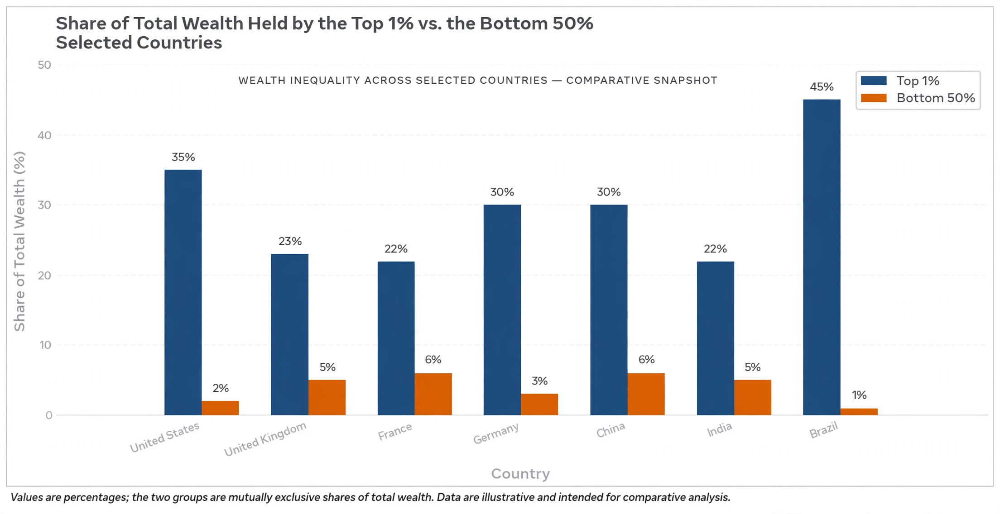

Wealth inequality

Wealth inequality is the unequal distribution of assets among the members of a society. Wealth — the stock of assets minus debts, including property, financial holdings, and business equity — is distributed far more unequally than income, a flow. In most countries the richest tenth of the population owns well over half of all wealth, while the poorer half owns only a few per cent; globally, the World Inequality Report has estimated that the richest 10 per cent own about three-quarters of global wealth and the bottom half about 2 per cent.
Measurement
Wealth distributions are summarised by shares held by top fractiles (the top 10%, 1%, and 0.1%) and by the Gini coefficient for wealth, which in most developed countries lies between about 0.7 and 0.9 — roughly double typical income Gini values. Measuring wealth is difficult: the richest households are hard to survey, assets held in tax havens escape national statistics, and pensions and human capital are inconsistently counted.
Causes
Thomas Piketty's Capital in the Twenty-First Century (2013) argued that when the rate of return on capital (r) persistently exceeds the growth rate of the economy (g), inherited wealth tends to grow in relative importance — a dynamic interrupted in the mid-twentieth century by war, inflation, and progressive taxation, which compressed wealth inequality in Europe and North America. Other drivers include rising housing values benefitting owners, differing savings rates, returns to business ownership, assortative mating, and the design of tax and inheritance systems.
Consequences and debate
High wealth inequality is associated by researchers with political influence concentrated among the wealthy, unequal access to education and housing, and slower social mobility. Critics of redistribution caution that wealth taxes are hard to administer, drive capital flight, and may discourage saving and enterprise; proponents reply that extreme concentration is itself a threat to democratic equality. Policy responses debated across countries include inheritance and estate taxes, annual wealth taxes (as in Norway, Switzerland, and Spain), land value taxation, and broader asset-ownership schemes such as sovereign wealth funds and baby bonds.